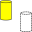

 Macro Toggle Drawstyle |
| Description |
|---|
| This macro toggles the Drawstyle of the selected object. |
| Author |
| Piffpoof |
| Links |
| Macros recipes How to install macros How to customize toolbars |
| Version |
| 1.0 |
| Date last modification |
| 2016-02-25 |
When working with FreeCAD there are times when you want to quickly change the Drawstyle of the object you are working with. This is available through the Drawstyle pull-down menu where any Drawstyle may be selected. This macro makes 2 of the Drawstyles available as a clickable button on a toolbar which the user may click to toggle back and forth between the two Drawstyles. The user can modify the macro code to select which 2 Drawstyles they wish to toggle between. This does not add functionality missing in the Drawstyles pull-down menu, but rather an increased convenience level.
Installation is comprised of copying the two code to the appropriate Macro directory and invoking it from the Macro menu. It is much preferable to add it both to a toolbar so as to be more easily available.
PS: You must adapt the macro to your language:
example with German language, replace the code (lines 41, 42)
drawstyleA = "As is" drawstyleB = "Wireframe"
to:
drawstyleA = "Original" drawstyleB = "Drahtgitter"
Select an object, then click on the associated toolbar button, or invoke from the Macro menu. The Drawstyle of the slected object will toggle beteen the two drawstyles specified in the macro code (see code listing below). Note: The specification for each Drawstyle is listed in the code, by modifying the code (which is documented in the macro code) the user may select which 2 Drawstyles are toggled between.
The selected object will be redrawn in the other drawstyle specified in the macro.
Script optimized for all languages and to object selected or all objects Keyboard shortcut, View toolbar - Wireframe (Sun Nov 27, 2016 6:49 pm)
# -*- coding: utf-8 -*-
#
#
#Macro: Toggle Draw Style
#
# This macros allows the user to switch between different Drawstyles by clicking on
# the button of a Macro in a toolbar.
#
# initial code:triplus
# macro-isation:piffpoof
#
# This macro switches (or toggles) between 2 selected styles from the Drawstyle menu.
# As written the macro toggles between "WireFrame" and "As is".
# Immediately below this text is a list of the legal values for the Drawstyle menu.
# The first 2 lines of executable code are of the form "DrawstyleA = " followed by
# the 2nd line which is of the form "DrawstyleB = ".
# These 2 lines specify which of the Drawstyle values the macro will toggle between.
# Drawstyle "As is" is the system default and so is specified as the first drawstyle.
# The second line specifies which drawstyle will be toggled to and from.
# Any of the legal values may be used, so if, for example, it is desired to toggle between
# the Shaded and Points drawstyles, then the 2 lines of code would be modified to be:
#
# drawstyleA = "Shaded"
# drawstyleB = "Points"
#
# but remember that the hash signs ('#') are not to be present on the executable lines.
#
###Legal Values for Drawstyle###
#
#"As is"
#"FlatLines"
#"Shaded
#"Wireframe"
#"Points"
#
################################
from PySide import QtGui
# Constant definitions
drawstyleA = "As is"
drawstyleB = "Wireframe"
# code ***********************************************************************************
mw = FreeCADGui.getMainWindow()
for i in mw.findChildren(QtGui.QAction):
if i.text() == drawstyleA.decode("UTF-8"):
actionA = i
elif i.text() == drawstyleB.decode("UTF-8"):
actionB = i
else:
pass
if actionA.isChecked():
actionB.activate(QtGui.QAction.Trigger)
else:
actionA.activate(QtGui.QAction.Trigger)
{kind=link}
{kind=link}